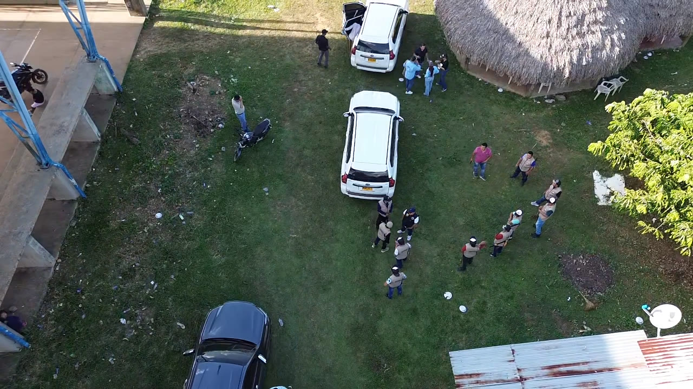

La propuesta de valor de la federación que está sembrando el futuro rural y energético de Colombia, un cultivo a la vez.

Identidad institucional
FAMEC es una federación gremial de segundo nivel sin ánimo de lucro, regida por las normas del derecho privado. Actuamos como puente estratégico entre el gobierno nacional, la cooperación internacional y los territorios más apartados del país.
A partir de 2026 concentramos toda nuestra capacidad técnica y financiera en un solo cultivo con potencial transformador real: la higuerilla (Ricinus communis), la semilla que regenera suelos, produce energía limpia y devuelve dignidad económica al campesinado colombiano.
Plataforma estratégica
"Sembrar en Colombia una agricultura que regenere la tierra, produzca energía limpia y devuelva ingreso digno al campesinado."
Articular y desarrollar en todo el territorio nacional una cadena de valor sostenible alrededor del cultivo de la higuerilla, integrando comunidades rurales, gobierno, ciencia, industria y mercados globales para producir aceite de ricino y biocombustibles que recuperen suelos, reduzcan emisiones y generen oportunidad económica circular en las regiones más apartadas de Colombia.
Ejecución, desarrollo, fomento y financiación de programas en los ámbitos social, agrícola, energético, comunitario y organizacional de la gestión pública. Promovemos el desarrollo integral de comunidades vulnerables, organizaciones sociales, comunales, indígenas y sus territorios. Nos dedicamos al servicio de las comunidades más apartadas y desfavorecidas de Colombia.
Ser la federación líder de la cadena agroenergética de la higuerilla en América Latina, con presencia consolidada en 5 regiones de Colombia, planta industrial de transformación operando, alianzas internacionales activas y al menos 100.000 familias rurales beneficiadas y 250.000 empleos verdes generados.
El contexto
3 años de I+D en campo: de la semilla al aceite certificado, de los cultivos piloto al liderazgo nacional.
Estudio de variedades de semillas. Análisis en diferentes pisos térmicos (0–2.120 msnm) y territorios del país.
Cultivos piloto en el Meta. Análisis de suelos y rendimientos por variedad. Primera extracción documentada de aceite crudo.
89% ácido ricinoleico validado en laboratorio. FAMEC se consolida como referente técnico de higuerilla en Colombia.
Referente #1 higuerilla en Colombia. Contacto directo con Arkema, Evonik, Hokoku y Jayant Agro — compradores Nivel 1.
Portafolio
De la semilla al producto certificado: aceite, energía y subproductos con alto valor industrial y trazabilidad completa.
 Principal
Principal
Aceite vegetal industrial con el 89% de ácido ricinoleico — la concentración más alta de cualquier aceite vegetal conocido. Apto para uso farmacéutico, cosmético e industrial con trazabilidad hectárea por hectárea.
 Energía
Energía
Una hectárea produce hasta 1.300 litros de biodiésel al año — tres veces el rendimiento de la soya. Compatible con flotas vehiculares, aviación sostenible (SAF) y generación eléctrica rural.
 Subproducto
Subproducto
Residuo sólido del prensado con alto contenido de nitrógeno. Biofertilizante orgánico que devuelve nutrientes al suelo, cerrando el ciclo de economía circular en cada lote.
 Industrial
Industrial
Más de 400+ aplicaciones industriales: lubricantes de alta temperatura, polímeros bioplásticos, nylon-11, tintas, barnices, cosméticos y farmacéuticos de grado premium. Mercado Tier 1 ya identificado.
Infraestructura
Centro agroenergético en el departamento del Meta, actualmente en fase de diseño y construcción. Energía 100% renovable (solar + biogás).
La semilla multipropósito
El aceite de higuerilla tiene la mayor versatilidad industrial de cualquier aceite vegetal conocido. Su estructura molecular única, con alto contenido de ácido ricinoleico (hidroxiácido graso), le permite crear derivados estables en condiciones extremas de temperatura y presión.
Cómo nos comportamos
Medida en hectáreas regeneradas y CO₂ evitado. No como discurso, sino como resultado verificable.
El productor es socio, no proveedor. Precio de compra garantizado, transferencia técnica y participación en el valor.
Cada decisión respaldada en evidencia, datos de campo y colaboración con universidades y centros de investigación.
Origen verificable hectárea por hectárea. La confianza con asociados, gobierno e inversionistas se construye con datos.
Tecnología cuando resuelve un problema real: mejorar el ingreso del productor o reducir el impacto ambiental.
Nada se hace sin el territorio. Cada iniciativa surge del diálogo con las comunidades, respetando sus culturas y dinámicas locales.

Liderazgo
José J. López Muñoz es el Director Ejecutivo de FAMEC. Con amplia experiencia en el sector agroenergético y en el desarrollo de proyectos rurales en la Orinoquía colombiana, lidera la transición de FAMEC hacia la cadena de valor de la higuerilla.
"La higuerilla no es solo una semilla. Es una decisión de país: recuperar la tierra, generar energía limpia y devolverle dignidad económica al campesinado."
Oportunidad global
Demanda creciente, oferta concentrada. India domina hoy. Colombia tiene las condiciones para posicionarse.
FAMEC participó en la Feria de Cantón 137 · China 2025 y mantiene acercamientos directos con Arkema, Evonik, Hokoku y Jayant Agro — compradores Nivel 1. Fuente: Grand View Research / Data Bridge.
Proceso certificado
Cinco peldaños integrados en un solo flujo continuo, con trazabilidad y eficiencia energética desde el primer eslabón hasta el cliente final.
Extraído por primera prensa, sin refinar. Color amarillento. Destino: biocombustibles y química pesada.
USD 1,50 – 1,62 / kg
Filtrado, desgomado y blanqueado (British Standard). Destino: pinturas, lubricantes, plásticos industriales.
USD 1,64 – 1,84 / kg
Máxima pureza. Destino: cosméticos premium, excipiente farmacéutico, lubricantes EV y fluidos de aviación.
USD 2,30 – 4,90 / kg
Proceso productivo certificado
Cada lote trazable hectárea por hectárea · Certificación ambiental · Energía 100% renovable en planta
Propuesta de valor
Seis razones para sumarse hoy — para productores rurales, inversionistas, aliados técnicos y cooperantes internacionales.
Mercado de USD 2.200 M con crecimiento del 5% anual. Compradores Tier 1 (Arkema, BASF, Evonik) ya identificados y con contacto establecido.
Validado científicamente en agroecosistemas colombianos (U. Nacional, 2012). Pruebas piloto FAMEC en marcha en el departamento del Meta con aceite ya producido.
Replica la fortaleza gremial de las grandes federaciones colombianas (cafeteros, cacaoteros). Estructura replicable en 5 regiones prioritarias del país.
100.000 familias rurales beneficiadas · 250.000 empleos verdes · sustitución de cultivos ilícitos. El productor es socio con compra garantizada, no proveedor.
+2,5 millones de ton CO₂ evitadas · trazabilidad completa · fitorremediación de suelos degradados · certificaciones ambientales. No es discurso, es dato verificable.
Colombia se proyecta como el mayor productor y comercializador de higuerilla en América Latina. Participación activa en ferias internacionales (Cantón 137 · China 2025).
Vinculación
Campesino, indígena o comunal con tierra para cultivar higuerilla. Incorporación en 30–60 días: visita técnica, acuerdo asociativo, insumos certificados y acompañamiento continuo.
Organizaciones de base que agrupan productores. Acuerdo marco, plan territorial conjunto y precio mejorado por volumen. Aceleran la escala regional.
Universidades, centros de investigación y consultoras agronómicas. Convenios de I+D con posibilidad de patentes compartidas y transferencia tecnológica mutua.
Fondos, banca de desarrollo, cooperación internacional, gobiernos o empresas. Capital, garantías o financiamiento para el desarrollo industrial y territorial de FAMEC.
La higuerilla es el cultivo. FAMEC es la federación. El campesinado es el corazón. Colombia es el destino. Te invitamos a ser parte.
FAMEC · NIT 901823266-2 — Federación Agro Energética Mixta de Colombia · federacionfamec@gmail.com · 314 406 8801 · www.famec.co · Calle 33 Sur #46-03, Barrio Montecarlo, Villavicencio, Meta